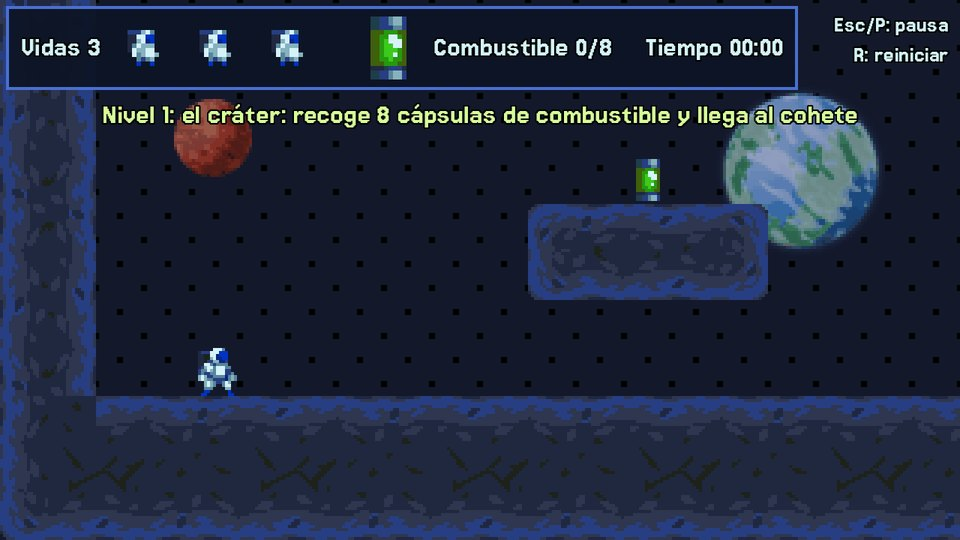

Spaceship Ultimate
Un astronauta, un cohete sin combustible y un planeta lleno de alienígenas.
Es un plataformero 2D en pixel art hecho con Godot para el curso Diseño Interactivo de la UNAD. Hay que recoger las cápsulas de combustible y llegar al cohete para volver a casa.
Jugar ahora Conocer el juego
En pocas palabras
2 niveles
El cráter y la base minera, cada uno con sus enemigos y puntos de control.
3 dificultades
Fácil, Normal y Difícil cambian cuántos enemigos hay y qué tan rápido se mueven.
Se juega en el navegador
La demo corre aquí mismo, sin instalar nada. Solo se necesita teclado.
¿Qué hay en este sitio?
En El juego está la historia, las mecánicas y a quién va dirigido. En Galería hay capturas y el video de presentación. En Proceso cuento cómo se hizo, desde la idea hasta esta versión, y en Jugar se puede probar o descargar.